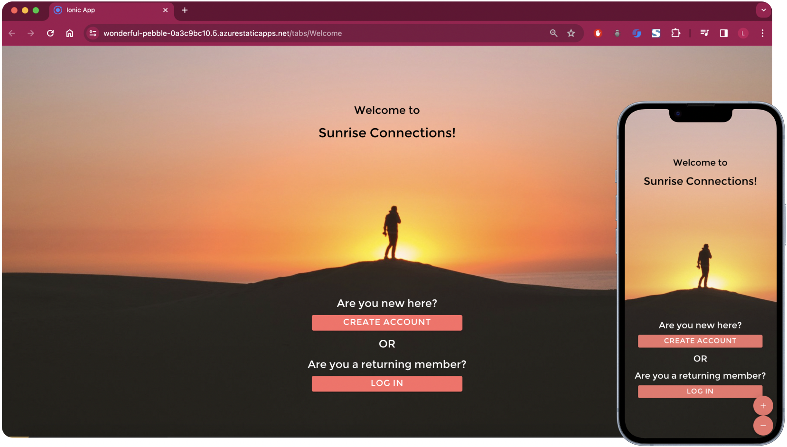

Crema is tailored to students who seek studying-conducive cafes. Overcrowded, lack of seating, cramped tables, lack of outlets, sticky tables? Avoid all of that with Crema’s filters and capacity calculator. We aim to help students find the best cafe for their studying needs.
Students study at a variety of places including home, the library, and cafes. At times students will travel to a cafe to study only to find that there are no spots or the tables aren't big enough for all of their study materials. Then they have to leave and take their chances elsewhere, possibly meeting the same fate.
In order to preserve the precious time they have, my team beanleaf decided to create Crema, a cafe-finder application that predicts the probability of securing a seat and provides live occupancy ratings. Crema also features a filter system tailored for finding study-conducive conditions such as quiet environment, available outlets, and large tables.
Lead Designer
Each member took on an existing software application or feature that potentially addresses our problem statement. We evaluated each for its intended use, user reception, and possession of key features we brainstormed.
In our research, we created a "User Interview Guide" that each of our members would follow. We outlined goals and objectives, methods, scripts, questions, etc. Doing so ensures that each member understands the purpose of the interview and key information we need. Each of us recruited a member of the target user base and interviewed them. From our findings, we noticed that the top voted dislike for studying at cafes was "limited seating". Our problem statement aligned with the research findings, and allowed us to focus on addressing that particular problem in our design. We decided that a prediction informing our users the probability of securing a seat would be helpful. We decided we would include such a feature in our lo-fi wireframes.
My team and I understood that personality and values shape an individual's needs and concerns. We created personas to gauge those potential needs and concerns regarding cafe-location.
My team and I planned and carried out a design workshop. During which, we each created a "How might we" as shown in the image below. We also went over collected research such as surveys and interview responses. Additionally, we completed an affinity map and drafted our lo-fi wireframes. During the design workshop, our project manager, Chessah, delegated some of our members to review interview responses and others to review the survey responses. I was a part of the latter group. We took notes on takeaways from each response on a sticky note and put them on the whiteboard. Gradually, natural groupings started to appear, so we clustered related notes together and labeled them. We noticed a lot of emphasis on preferences; it had the most sticky notes and many expressed liking it. Most of the problems that responses had with study at cafes pertained to seat acquisition at nearby cafes. As a result, we focused on including a filter system and sorting cafe results by current location in our wireframes.
During our design workshop, I created a sketch for the search results screen and map. From that sketch, I created a wireframe to detail the features and layout of information, prioritizing convenience and readability.
We created hi-fi mock-ups of the smart glasses and the companion app.